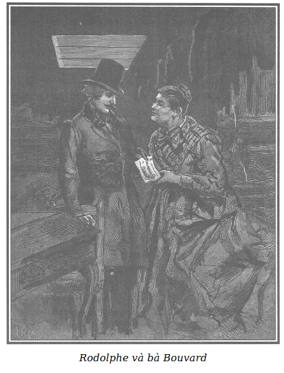

Mẹ Bouvard bảo với Rodolphe khi Rigolette đi khỏi:
- Thưa ông, đúng là ông có một người nội trợ đảm đang quá! Giỏi thật! Mua bán đến là sành sỏi mà lại dễ thương! Trắng trẻo, hồng hào, mắt đã đen, mái tóc cũng đen, thực là hiếm thấy!
- Bà có cho là xinh đẹp không hở bà? Được người vợ như thế là tốt phúc phải không ạ?
- Anh tốt phúc và chị cũng duyên may, chắc chắn là như thế!
- Bà không nhầm chút nào đâu! À, mà hết bao nhiêu tiền thế, thưa bà?
- Cô nội trợ thân yêu của ông nhất định không nhả ra quá ba trăm ba mươi franc. Lạy Chúa, tôi chỉ kiếm được có mười lăm franc vì tôi không muốn ép giá hơn nữa mà kiếm lãi nhiều hơn. Tôi chẳng lòng nào cò kè mặc cả với họ, những người bán món hàng ấy có vẻ khổ não quá thể.
- Thật sao? Thế có phải cũng chính những người ấy đã bán lại cho bà cả cái tủ nhỏ đựng giấy tờ kia không?
- Thưa ông, đúng đấy! Này ông ạ, chỉ nghĩ đến thôi cũng đau lòng. Ông xem, mới hôm kia thôi có một bà còn trẻ đẹp đã đến cửa hàng tôi, nhưng mà xanh xao gầy gò lắm, nhìn mà thương. Nhà nghề như chúng tôi thì biết ngay thôi. Tuy ăn mặc rất chỉnh tề, chải chuốt nhưng cái khăn san đã sờn, cái áo tơ pha len cũ kĩ, cái mũ rơm đội vào giữa tháng Giêng này (bà ấy đang để tang mà). Tất cả đều bộc lộ điều mà chúng tôi vẫn nói là “giàu bị gậy, khó quan viên”, vì tôi dám chắc bà ta là người rất lịch sự. Thế rồi bà ta đỏ mặt, ngại ngùng dạm bán cho tôi hai bộ chăn đệm và một tủ nhỏ đựng giấy tờ. Tôi trả lời, có bán thì có mua, và nếu vừa ý thì coi như xong, nhưng phải xem qua hàng đã. Bà ấy mời tôi lại nhà, cũng không xa đây lắm, ở phía bên kia đại lộ, trong một ngôi nhà liền bến cảng bên kênh đào Saint-Martin. Tôi dặn cô cháu gái trông cửa hàng và đi theo bà ta, đến một ngôi nhà ở cuối sân, loại nhà trọ bình dân, như người ta vẫn thường nói. Chúng tôi trèo lên gác tư, bà ta gõ cửa, một thiếu nữ khoảng mười bốn tuổi ra mở. Cô gái cũng để tang và cũng thật xanh xao gầy gò, nhưng vẫn cứ đẹp, đẹp như tiên, đến nỗi tôi phải ngây người ra ngắm.
- Thế cô gái đẹp ấy là?
- Là con gái của bà ta. Trời lạnh thế mà chỉ mặc có mỗi cái áo vải bông đen hoa trắng và một cái khăn san để tang đã sờn. Trang phục chỉ có vậy!
- Chỗ họ ở chắc bệ rạc lắm nhỉ?
- Ông cứ hình dung mà xem, hai buồng rõ sạch nhưng trống trơn, lạnh đến chết người, ở lò sưởi chẳng thấy tí tro nào, hẳn đã lâu ngày chưa hề nổi lửa. Đồ đạc vẻn vẹn có hai cái giường, hai cái ghế, một tủ com-mốt, một cái rương cũ, và một cái tủ nhỏ đựng giấy, trên rương có một bộ quần áo gói bằng khăn foulard. Cái bọc nhỏ ấy là tất cả của cải còn lại của hai mẹ con sau khi đã bán hết đồ đạc. Người gác cổng mách với tôi là chủ nhà đã thu xếp giữ lại hai cái giường gỗ, ghế, rương, bàn để trừ nợ. Sau đó bà ta thẳng thắn yêu cầu tôi định giá mua chỗ chăn đệm, ri đô, các thứ. Tôi là đàn bà, nghề tôi vốn là mua rẻ bán đắt kiếm lời, nhưng thấy cô bé tiểu thư giàn giụa nước mắt mà bà mẹ thì bề ngoài bình tĩnh, bên trong khóc thầm, nên tôi chỉ trả bớt đi mười lăm franc và như thế cũng là phải giá, tôi xin thề với ông là như vậy. Tôi còn mua giúp họ cả cái tủ nhỏ đựng giấy tờ này nữa, dù không quen nghề.
- Thế thì bà bán lại đi, tôi mua, bà Bouvard ạ!
- Thật tình, được thế thì càng hay! Khỏi phải giữ lâu, đọng vốn. Tôi có lấy về chẳng qua cũng chỉ để giúp đỡ cái bà tội nghiệp ấy. Tôi bèn trả cái giá đã định cho những thứ đó, tưởng rằng bà ta sẽ kì kèo, đòi nhiều hơn. Lầm to, ông ạ! Cũng vì thế mà tôi thấy bà ta không như những người khác, khó mà khó quan viên đấy, ông ạ, chắc hẳn là thế. Tôi mới bảo: “Tôi trả bằng này!” Bà ấy đáp: “Thôi, cũng được! Giờ mời bà về cửa hàng để trả tiền, vì tôi không quay lại cái nhà này nữa đâu.” Sau đó bà ta quay lại bảo cô con gái đang ngồi khóc trên cái rương: “Claire con, cầm lấy khăn gói con ạ!” Tôi nhớ thật rõ bà ấy gọi tên cô này là Claire. Cô tiểu thư trẻ tuổi đứng lên nhưng khi đến bên cái tủ nhỏ đựng giấy tờ thì bỗng nhiên cô ta quỳ xuống và òa khóc nức nở. “Con ơi, can đảm lên con! Người ta đang nhìn kìa!” Bà mẹ nói khe khẽ nhưng tôi vẫn nghe được. Ông ạ, ông cũng phải thừa nhận rằng những người ấy nghèo thật đấy, nhưng họ rất biết tự trọng. Khi bà ta trao chìa khóa cái tủ nhỏ đựng giấy tờ cho tôi, tôi cũng thoáng thấy mắt bà ta đỏ hoe, rơm róm, dường như trái tim cũng đang rỏ máu vì phải xa rời vật cũ, đồ xưa. Tuy thế bà ta vẫn cố giữ vẻ bình thản và tư cách trước người ngoài. Thế rồi bà ta báo cho người gác cổng biết là tôi sẽ cho người đến đem tất cả những gì mà chủ nhà không giữ lại để trừ nợ. Sau đó chúng tôi quay về cửa hàng này. Cô tiểu thư bé nhỏ đưa tay cho mẹ khoác và ôm cái bọc đựng tất cả mọi “đồ tế nhuyễn, của riêng tây”. Tôi trả cho bà ta ba trăm mười lăm franc và từ bấy tới nay, không hề thấy họ nữa.
- Thế tên họ bà ta là gì hở bà?
- Tôi cũng chẳng rõ. Bà ta mua bán với tôi trước mặt người gác cổng, tôi thấy không cần thiết biết họ tên của bà ta làm gì. Những thứ bà ta bán đều là của bà ta.
- Thế địa chỉ mới của họ ở đâu?
- Tôi cũng chẳng biết gì hơn!
- Tất nhiên là nơi nhà cũ, người ta biết chứ?
- Không đâu, ông ạ! Khi tôi quay lại để lấy hàng thì người gác cổng đã cho tôi biết như thế này: “Thật là những người bình dị, đáng trọng và bất hạnh quá! Mong sao họ đừng gặp những chuyện không may nữa. Họ bề ngoài có vẻ điềm nhiên đấy nhưng tôi chắc là trong lòng họ thật quá tuyệt vọng.” - “Thế bây giờ thì họ đi đâu?” - Tôi hỏi vậy. Người gác cổng bèn bảo: “Thực tình tôi chẳng biết gì cả, họ đi cũng chẳng nhắn gì tôi, chắc chắn là họ không quay lại nữa đâu.”
Những hy vọng mà Rodolphe vừa ấp ủ trở thành vô vọng. Làm thế nào tìm ra được hai người phụ nữ bất hạnh ấy mà chỉ dựa vào mỗi một dấu hiệu là tên cô gái Claire và mảnh giấy nháp đã nhắc tới tên, phần dưới có mấy chữ: “Viết cho nữ Công tước de Lucenay.”
Khả năng duy nhất và mỏng manh để tìm ra tung tích hai con người bất hạnh ấy là trông chờ vào phu nhân de Lucenay. Phúc đức làm sao, bà ấy lại là chỗ đi lại với phu nhân d’Harville.

.- Tiền đây, bà nhận đi! - Rodolphe đưa ra tờ năm trăm franc.
- Tôi sẽ đưa lại tiền thừa.
- Tìm đâu một cái xe ba-gác để chở những thứ này hả bà?
- Nếu không phải đi xa lắm thì chỉ cần một xe ba-gác lớn là đủ. Gần đây có xe của bố Jérôme, vẫn quen chở hàng giúp tôi. Thưa, ông về đâu ạ?
- Phố Temple, nhà số 17.
- Phố Temple, nhà số 17… À, được, thế thì được! Tôi biết chỗ đó rồi.
- Bà đã đến đấy rồi sao?
- Nhiều lần rồi ông ạ! Thoạt đầu thì tôi mua áo cũ của một bà làm nghề cầm đồ ở đấy. Thực ra thì nghề của bà ấy cũng chẳng tốt đẹp gì, mà cũng chẳng liên quan gì đến tôi. Bà ấy bán thì tôi mua, thế thôi. Lần sau, cách đây chưa đến sáu tuần lễ, tôi có quay lại để mua đồ đạc của một chàng trai trên gác bốn, cậu này chuyển đi nơi khác.
Rodolphe hỏi ngay:
- Cậu François Germain phải không?
- Đúng đấy! Ông quen cậu ta à?
- Quen lắm chứ! Không may là cậu chàng chẳng hề để lại địa chỉ mới cho bất cứ ai ở phố chợ Temple, nên tôi không biết tìm cậu ta ở đâu.
- Tưởng là gì! Nếu chỉ có thế thôi thì tôi sẽ mách ông biết chỗ chắc chắn tìm gặp được cậu ta.
- Ở đâu vậy?
- Ở nhà viên chưởng khế, nơi cậu ta làm việc ấy mà!
- Nhà viên chưởng khế à?
- Vâng, ở phố du Sentier.
- Ông Jacques Ferrand chứ gì? - Rodolphe buột miệng kêu to.
- Chính ông ta đấy! Người đâu rõ thánh thiện! Ở văn phòng, ông ta có một giá thập tự gỗ được ban phép thánh đấy. Vào đó cứ như vào trong nhà kho đồ thờ.
- Nhưng do đâu mà bà biết được cậu Germain làm việc ở văn phòng ông chưởng khế ấy?
- Như thế này này! Chàng trai ấy đến dạm bán cho tôi toàn bộ số đồ đạc của mình. Lần ấy cũng thế, tuy không phải nghề nhưng tôi cũng vẫn thường hay mua gọn để bán lẻ dần sau này. Kể ra như vậy cũng tiện, vả tôi cũng không muốn làm thất ý cậu ấy. Tôi bèn mua lại cả bộ đồ đạc dùng cho hộ độc thân của cậu ấy. Tốt! Tôi trả tiền. Thế là xong! Hẳn là cậu ấy hài lòng lắm, cho nên nửa tháng sau, cậu ấy quay trở lại cửa hàng tôi mua một bộ giường màn chăn đệm, thuê một xe ba-gác nhỏ và một người hộ tống: xếp hàng đầy đủ, mang đi. Xong xuôi, đến lúc trả tiền thì cậu ấy mới biết là bỏ quên túi tiền ở nhà, cậu ấy có vẻ rất đứng đắn nên tôi mới bảo: “Được, cậu cứ việc mang đồ đi, không sao, mai tôi đến tận nhà lấy tiền cũng được.” Cậu ấy nói: “Thế thì tốt quá! Nhưng chẳng mấy khi tôi có nhà, vậy sáng mai bà chịu khó đến phố du Sentier, văn phòng ông chưởng khế Jacques Ferrand, nơi tôi làm việc, tôi xin thanh toán đủ.” Hôm sau tôi đến thì cậu ấy trả tiền sòng phẳng ngay. Chỉ có điều tôi lấy làm lạ là sao cậu ấy lại bán chỗ đồ đạc đang dùng, sau đó nửa tháng phải đi mua bộ khác.
Rodolphe tin và đoán ngay được lý do của điều bất thường ấy: Germain muốn xóa hết dấu tích để bọn khốn kiếp đang truy lùng mưu hại cậu ta không biết đâu mà dò. E rằng lúc dọn đến nơi ở mới sẽ để lộ tung tích, nên cậu ta đã chọn phương sách bán sạch đồ đạc để rồi đi mua những thứ khác cho kín đáo.
Rodolphe suýt nhảy cẫng lên vì mừng rỡ, khi nghĩ đến nỗi sung sướng của bà Georges, rồi đây sắp được hội ngộ với đứa con trai đã biệt tăm từ lâu, không biết tìm đâu.
Chẳng mấy lúc mà Rigolette đã quay trở lại, mắt sáng, miệng cười tươi tắn, cô reo to:
- Này, em đã bảo mà, nói không sai nhé! Ta chỉ tiêu hết sáu trăm bốn chục franc mà cả nhà Morel sẽ được ăn ở như ông hoàng bà chúa! Xem này! Xem những người bán hàng họ đang đến kia kìa! Rõ vô số là hàng! Chẳng còn thiếu một thứ gì cần cho một gia đình nhé! Cả cái vỉ nướng chả, cho đến hai cái xoong mới tráng thiếc và một ấm pha cà phê nữa! Em nghĩ rằng, bởi vì “người ta” muốn mọi việc đều phải “ra gì” thì ta cứ thế mà làm. Làm xong tất cả bằng nấy việc, em chỉ mất độ ba tiếng đồng hồ là cùng. À, mà trả tiền đi, anh bạn láng giềng của em, và ta đi về thôi. Sắp trưa rồi đấy! Phải ra sức khâu rõ nhanh để bù lại cho sáng hôm sau đấy.
Rodolphe trả tiền và cùng Rigolette rời khu chợ Temple.